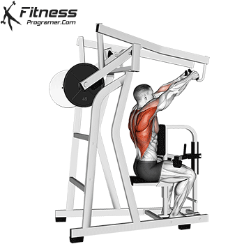
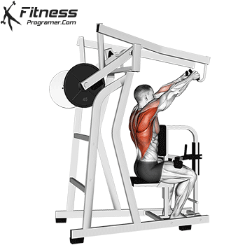
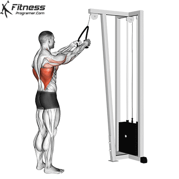
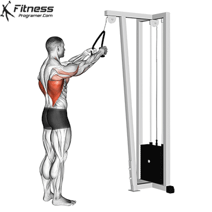

Sit down at the lat pulldown machine with your feet flat on the floor and knees secured under the pad. Grab the bar with a wide grip, ensuring your palms are facing forward. This exercise primarily targets the lats, with the rear delts activated as stabilizers throughout the movement.
Pull the bar down towards your chest, focusing on engaging the rear delts and lats. Keep your back slightly arched and avoid using your arms to pull the bar—let the back muscles do the work.
Slowly release the bar back to the starting position, maintaining control throughout the movement and keeping your rear delts engaged as stabilizers.
 
